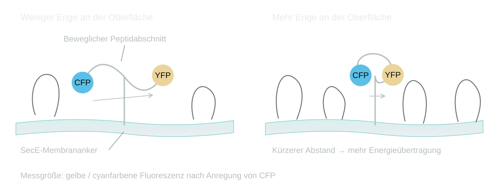

Bachelorforschung · HHU Düsseldorf · 02–08/2019
Molekulare Enge an
Membranen erfassen
Zellen sind dicht mit Makromolekülen gefüllt. Dieser Platzmangel beeinflusst, wie Proteine ihre Form ändern und miteinander wechselwirken. Ich untersuchte, ob sich dafür entwickelte Fluoreszenzsensoren an einer Membran verankern lassen, um die Enge direkt an ihrer Oberfläche zu erfassen.
Warum die Umgebung eines Proteins seine Form beeinflusst
Proteine, Nukleinsäuren und andere große Moleküle beanspruchen Raum, der ihren Nachbarn nicht mehr zur Verfügung steht. Dieses makromolekulare Crowding verändert die zugänglichen Anordnungen: Zwei Moleküle können nicht denselben Raum einnehmen. Der Effekt des ausgeschlossenen Volumens kann kompakte Proteinformen begünstigen und Gleichgewichte von Faltung, Bindung und Zusammenlagerung verschieben.
Auch Membranoberflächen sind mit Proteinen besetzt. Ein frei gelöster Sensor erfasst diese lokale Umgebung nur unzureichend. Die Idee war deshalb, ihn dicht an der Membran zu verankern. Ein funktionierendes Messsystem könnte später helfen, den Einfluss dieser Enge auf membrannahe Vorgänge wie den Proteintransport zu untersuchen.
Ein Abstandssensor für Crowding
Die Sensoren verbinden ein cyanfarbenes und ein gelbes fluoreszierendes Protein über einen beweglichen Peptidabschnitt. Bei FRET überträgt der angeregte Donor Energie ohne Lichtemission auf den Akzeptor. Diese Übertragung hängt empfindlich vom Abstand der beiden Fluorophore ab. Die Sensorhypothese: Crowding begünstigt eine kompaktere Form, die Fluorophore rücken näher zusammen und die Energieübertragung nimmt zu.
Gemessen wurde das Verhältnis der gelben zur cyanfarbenen Fluoreszenz nach Anregung des Donors. Dieses Verhältnis ist ein indirekter Hinweis auf die Sensorkonformation; erst ein kontrolliertes und charakterisiertes System erlaubt daraus eine Aussage über Crowding.

Synthetische Membranen als kontrollierte Versuchsumgebung
Ich exprimierte und reinigte drei Sensorvarianten mit unterschiedlicher Beweglichkeit sowie die benötigten Anker- und Gerüstproteine. Die Sensoren wurden über SpyTag/SpyCatcher an das Membranprotein SecE gekoppelt. Liposomen und Nanodiscs bildeten zwei Modellmembranen: geschlossene Lipidbläschen und kleine, von Gerüstproteinen stabilisierte Membranscheiben.
In Lösung dienten PEG und Ficoll als Crowdingmittel. An den Membranen sollten lipidverankertes PEG und gebundenes Streptavidin die Oberfläche verdichten. Die zentrale Prüfung war, ob das Fluoreszenzsignal des gebundenen Sensors diese veränderte Umgebung spezifisch wiedergibt. Freier Sensor musste dafür vom gebundenen Anteil getrennt werden.
Was die Versuche zeigten
| Vergleich | Beobachtung | Bedeutung |
|---|---|---|
| Sensoren in Lösung | Alle drei Varianten reagierten auf Crowdingmittel mit einem höheren YFP/CFP-Verhältnis. | Das grundlegende Sensorprinzip war in Lösung nachvollziehbar. |
| Sensoren an Liposomen | Bindung gelang, blieb aber unvollständig. Einzelne Präparationen zeigten PEG-abhängige Signaländerungen. | Freie und gebundene Sensoranteile sowie Präparationseffekte erschwerten die Zuordnung. |
| Sensoren an Nanodiscs | Die Trennung gelang besser. Signaländerungen traten teilweise auch bei Kontrolllipiden auf. | Ein verändertes FRET-Verhältnis ließ sich nicht eindeutig dem Crowding zuschreiben. |
Die Tabelle lässt sich auf kleinen Bildschirmen seitlich verschieben.
Die Grenzflächenmessung blieb eine offene Sensoraufgabe.
Die Arbeit zeigte, wie sich Sensoren herstellen und an synthetische Membranen koppeln lassen. Eine belastbare Quantifizierung des Crowding an der Membran entstand daraus noch nicht. Dafür müssten die Bindung beziehungsweise Trennung verbessert und Einflüsse des Ankers und der Modellmembran auf das Signal geklärt werden. Aus der begrenzten Sensorantwort folgt keine Aussage, dass an Membranen keine molekulare Enge herrscht.
Eigenständige Abschlussarbeit in der Arbeitsgruppe Synthetische Membransysteme. Betreuung, Methodenvermittlung und fachliche Rückmeldungen kamen aus der Arbeitsgruppe.